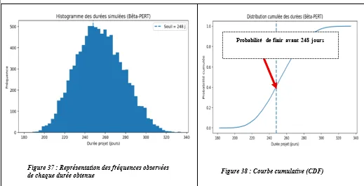

Projet de fin d’études · INPHB / SICMA · 2025
Processus d’aide à la décision pour le choix de la méthode de réalisation de la dalle du viaduc
Comparer la préfabrication intégrale et les prédalles collaborantes par des analyses probabilistes (PERT, Monte-Carlo) puis trancher avec une analyse multicritère Fuzzy AHP : la préfabrication intégrale est retenue (54 % contre 46 %).
- Cadre
- Projet de fin d’études — INPHB / SICMA
- Lieu
- Abidjan, Côte d’Ivoire
- Rôle
- Stagiaire conducteur travaux
- Période
- 4 mars — 4 sept. 2025

01Contexte
Projet de fin d’études mené en 2025 entre l’INPHB et la SICMA, pendant mon stage de conducteur de travaux sur le viaduc de la Ligne 1 du Métro d’Abidjan. Le sujet : proposer un processus d’aide à la décision dans le choix des méthodes de réalisation de la dalle d’un ouvrage d’art mixte.
02Problématique
Pour réaliser la dalle d’un ouvrage d’art mixte, plusieurs méthodes reconnues existent. Le choix doit être fait sous diverses contraintes — temps, coût, sécurité… — et en tenant compte de l’incertitude des durées de chantier.
Deux méthodes ont été comparées :
- la préfabrication intégrale de la dalle ;
- les prédalles collaborantes.
03Démarche
- Analyse des variantesPlanning de chaque méthode étudié par PERT et simulation de Monte-Carlo ; autres critères : retours d’expérience, dimensionnement…
- Analyse multicritèrePondération et comparaison des variantes par la méthode Fuzzy AHP.
- Étude complèteDéveloppement détaillé de la solution retenue.
04Outil développé : simulation Monte-Carlo en Python
J’ai écrit un programme Python qui simule le planning d’un réseau de tâches : les durées de chaque tâche suivent une loi Bêta-PERT (durées optimiste, probable et pessimiste), les tâches sont ordonnées par un tri topologique (algorithme de Kahn), puis des milliers de tirages produisent la distribution de la durée totale du projet.
Les résultats sont lus sur l’histogramme des durées simulées et sur la courbe cumulative, qui donne la probabilité de terminer avant une échéance donnée.
05Résultat : la préfabrication intégrale est retenue
À l’issue de toutes les analyses et de la méthode Fuzzy AHP, la préfabrication intégrale obtient le meilleur score final. C’est la méthode retenue pour la réalisation de la dalle.
06Compétences démontrées
Pendant ce même stage, j’ai aussi rédigé des procédures pour la préfabrication des dalles du viaduc et établi un planning de production sous contraintes (transport, clavage, pose de dalles…).